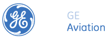

05-11-2007 |
GE MTC |
UG Modeling Engineer, Laser Application Engineer, Metalworking/Manufacturing Engineer, Coating Special Process Engineer, Kocaeli |
GE MTC is a GE Aviation Engineering global site specialized in manufacturing and inspection technologies, serving customers globally. The site is located in Gebze, Turkey. Its global customers recognize GE MTC as a center of technical excellence providing services with full customer engagement and quick response time, improving the global reach of GE Aviation Engineering.
GE MTC currently employs 44 engineers specializing in metalworking & materials processes, manufacturing quality & software technologies and repair technologies. The site is a key part of the GE Aviation engineering global strategy and is expected to grow to more than 100 engineers over next couple of years with work specialization expanding to design of components for GEA products.
GE is an equal opportunity employer, offering a great work environment, challenging career opportunities, professional training and competitive compensation.
We are currently looking for the UG Modeling, Laser Application, Metalworking/Manufacturing and Coating Special Process Engineers. You can apply to below positions via www.kariyer.net
UG Modeling Engineer:
Responsibilities:
The successful candidate will;
* Be responsible for manufacturing modeling tools development and support. He/she will be involved from the problem definition to delivery and support phases.
* Provide regular feedback to users and leadership team and interact regularly with GE sites worldwide to resolve project and tool related issues.
* Be located at GE Marmara Technology Center, Gebze - Kocaeli.
Qualifications:
* BSc degree in Mechanical, Manufacturing Engineering or related discipline
* Good understanding of parametric modeling
* Minimum 2 years of experience in Unigraphics (UG) CAD or similar CAD/CAM tools
* Experience with Assembling and Drafting
* Fluent in English (both verbal & written)
* Excellent communication & teamwork skills
* Completed military service for male applicants
Desired qualifications:
* Experience on PDM Tools (such as UG Team Center) is a plus
* Experience in C programming
* Experienced in all phases of project management, including project identification, scope definition, planning, execution, version control, and support.
Laser Application Engineer:
Responsibilities:
The successful candidate will:
* Work with laser team on development of high-tech laser material processing techniques for aerospace applications.
* Be involved heavily in implementation of image processing based closed loop control techniques to laser material processes, also requiring robotics and automation skills.
* Perform hands-on-job laser material processing experiments for research & development, error proofing and statistical process enhancement.
* Be involved in TUBITAK and EU funded, national and/or international research projects.
* Daily work will include planning and executing experimental work to generate a process maps and establish process capability. Design of an experimental setup, pursuing related manufacturing phases.
Qualifications:
* BSc or MSc degree in Mechanical, Mechatronics, Materials or Electrical Engineering, or related discipline.
* Past (2 years) experience or academic studies on advanced manufacturing techniques.
* Fluent in English (both verbal & written, proven track of business conduct in a foreign language environment is a bonus)
* Completed military service for male applicants
* Excellent communication & teamwork skills
Desired qualifications:
* Experience in welding, machine building and/design, hands on experience on the manufacturing of the above is preferred.
* Academic studies in advanced welding techniques and/or laser welding, laser cutting or allied technologies is an asset.
* Experience/exposure to (image processing based preferred) control system design and/or application.
* Exposure to automated processes, automated manufacturing systems is an asset.
* Experience or academic studies with an OOP language is a bonus.
* Experience with the operation of shop tools: lathes, mills, drills, etc. is bonus
* Experienced in all phases of project management, including project identification, scoping, definition, planning, execution, and support
* Proven self-starter and independent worker who can work with cross-functional teams.
* Effective interpersonal skills, which enable a learning approach to problem resolution
* Ability to multi-task effectively in a result oriented, risk averse approach.
Metalworking & Manufacturing Engineer:
Responsibilities:
The successful candidate will:
* Work with metalworking team to develop/identify manufacturing processes especially around new techniques.
* Provide regular feedback to customer and Leadership team and interact regularly with GE sites worldwide to resolve project related issues.
Qualifications:
* BSc or MSc degree in Mechanical or Manufacturing Engineering, or related discipline
* Minimum 4 years of experience in aerospace part manufacturing related with conventional machining such as milling, turning, broaching
* Working knowledge to design manufacturing processes (milling, turning, broaching etc.) from requirements
* Fluent in English (both verbal & written, both verbal & written, proven track of business conduct in a foreign language environment is a bonus
* Excellent communication & teamwork skills
* Completed military service for male applicants
Desired qualifications:
* Familiarity with CAD/CAM
* Knowledge on surface enhancement techniques (peening, blasting etc.)
* Past working experience with aerospace alloy manufacturing; Titanium, Cobalt, Nickel etc.
* Familiarity with FEM analysis and its applications within metalworking technology
* Hands on experience with the operation of shop tools: lathes, mills, drills, etc.
* Experienced in all phases of project management, including project identification, scoping, definition, planning, execution, and support
* Proven self-starter and independent worker who can work with cross-functional teams.
* Effective interpersonal skills, which enable a learning approach to problem resolution
* Ability to multi-task effectively in a result oriented, risk averse approach.
Coating Special Process Engineer:
Responsibilities:
The successful candidate will:
* Oversee coating technologies such as Thermal Barrier Coatings (TBC), Hyper Velocity Oxygen Fuel coatings and the heat treatment of these coatings in the repair of gas turbine or aircraft engine hot gas path components.
* Be responsible for learning these technologies/ processes and be able to help implement these technologies into new & existing repair shops.
* Be required to interface with repair shop leadership, Repair Technologies Center of Excellence component engineers and materials engineers.
* Be required qualify the repair shops to perform these special processes (Certifying Agent)
Qualifications:
* Bachelor of Science in Material Science or Engineering
* Experience coating technologies
* Ability to communicate clearly and effectively in writing or orally in English
* Travel to global service shops will be required
Desired qualifications:
* Experience with thermal spray equipment
* Experience of robotic application of coatings on industrial gas turbine or aircraft engine hot gas path components.
* Proven self-starter and independent worker who can work with cross-functional teams
* Effective interpersonal skills, which enable a learning approach to problem resolution.
* Experience with and knowledge of manufacturing processes.
* Familiarity with shop operations and quality systems.
* Demonstrated ability to plan and manage programs
* Ability to multi-task effectively
Seren Bayramoglu
HR Manager
seren.bayramoglu ge.com ge.com
GE Marmara Technology Center Muhendislik Hiz. Ltd. Sti.
TUBITAK-MAM Teknoloji Serbest Bolgesi
41470, Gebze, Kocaeli
T +90 262 677 60 40
F +90 262 644 45 30
www.geaviation.com
Not: Bu iş ilanı, sektörden binlerce üyesi bulunan TurkCADCAM
e-posta grubunda da yayınlanmıştır. |
|